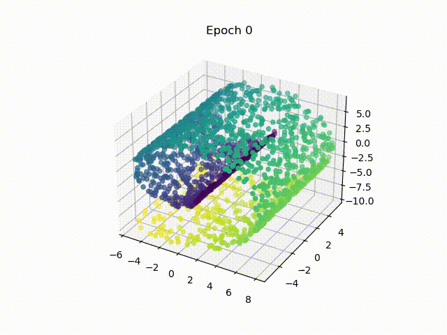
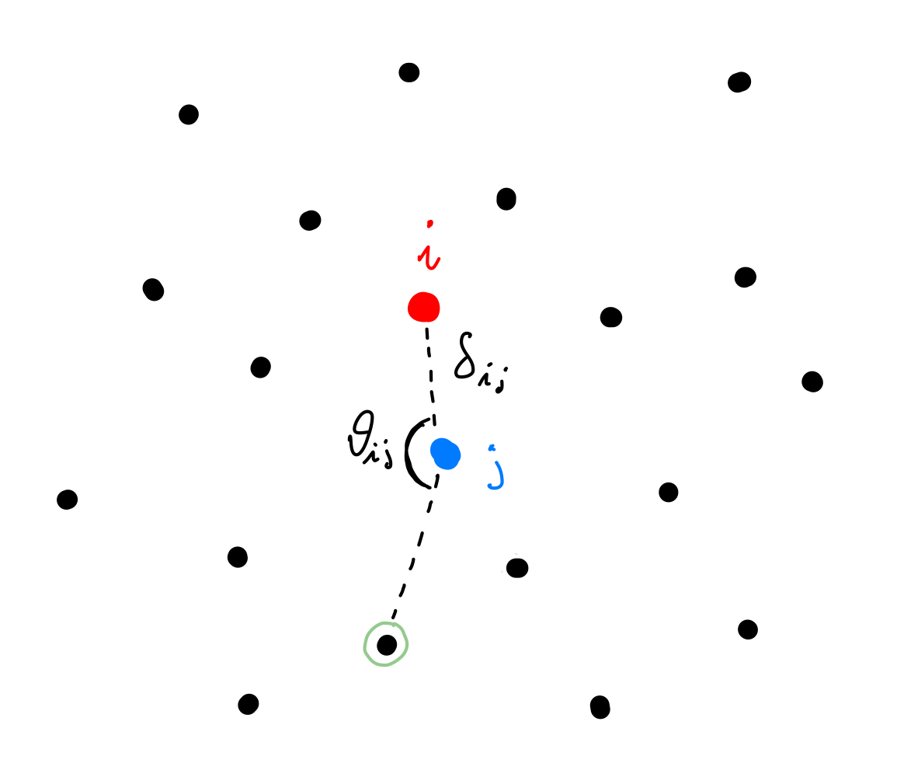
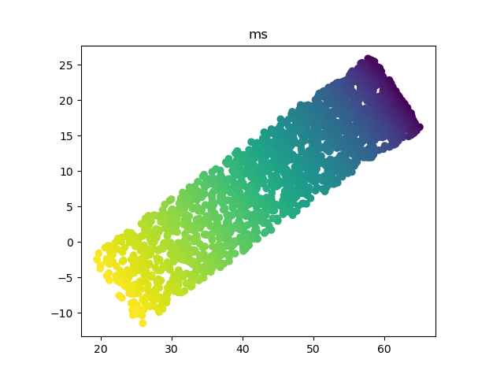
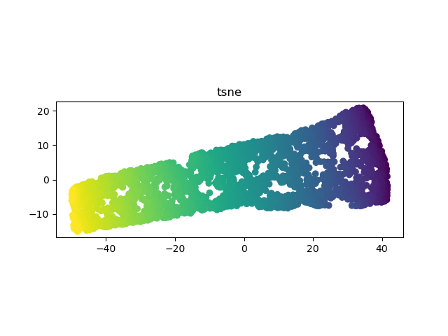
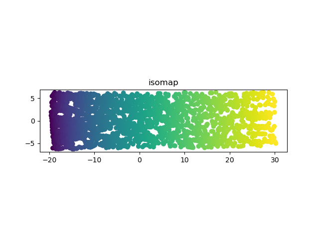
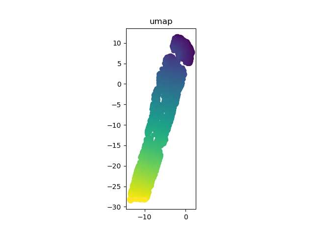
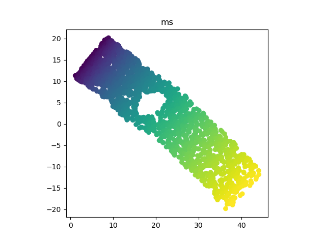
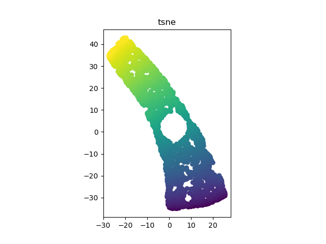
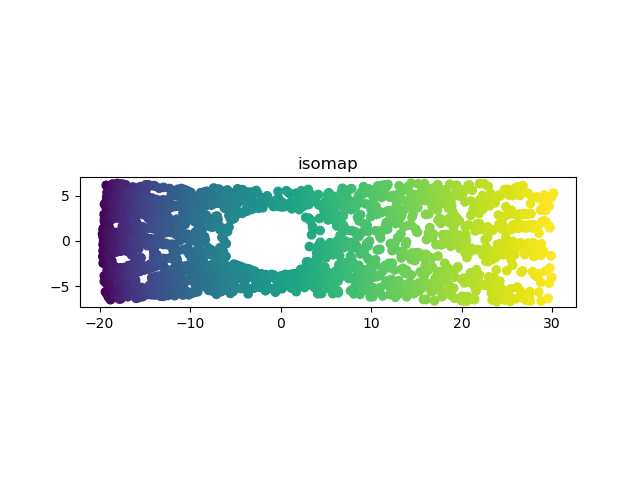
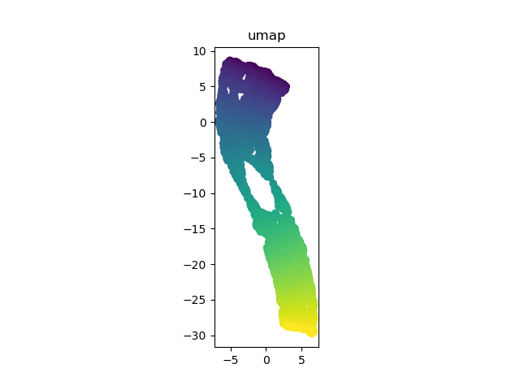

Gabriele Codega
January 2023
Rearrange points in such a way to preserve local relationships

1. Find k-Nearest Neighbours
2. Compute relationships
3. Preprocess with PCA
4. Until convergence
4a. Scale down dimensions to discard
4b. Scale up and shift dimensions to keep
5. Embed by discarding unwanted dimensions
Adjust points in order to minimise
\(e_i = \sum_j w_{ij} \bigg(\bigg(\frac{\delta_{ij}-\delta_{ij0}}{\delta_{ave}} \bigg)^2 + \bigg(\frac{\theta_{ij}-\theta_{ij0}}{\pi} \bigg)^2 \bigg)\)
 
 
 
 
Comments
Pros
Cons